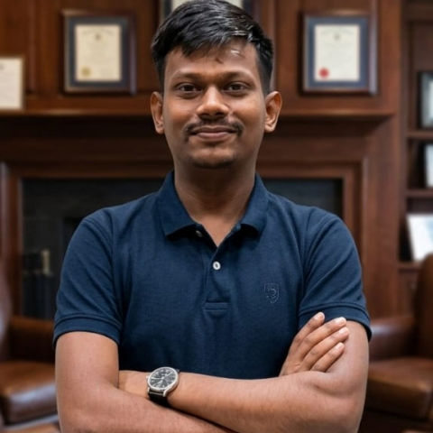

Advancing Research in Structural Dynamics, Noise-Vibration-Harshness, Condition Monitoring, Signal Processing & Artificial Intelligence
Department of Mechanical Engineering · Indian Institute of Technology Indore
Our mission, focus & vision
The Solid Mechanics and Noise, Vibration & Harshness (NVH) Laboratory at IIT Indore is dedicated to cutting-edge research in structural dynamics, condition monitoring, machine learning, signal processing and predictive maintenance. The laboratory focuses on developing intelligent diagnostic and prognostic systems for modern engineering applications — bridging the gap between classical mechanics and data-driven intelligence.
Prof. Anand Parey — Professor & Head, Mechanical Engineering

Prof. Anand Parey is a distinguished academician and researcher in Mechanical System Design with expertise in condition monitoring, signal processing of mechanical systems, noise and vibration control, gear fault diagnosis, and rotating machinery dynamics. He leads the Solid Mechanics Lab, Noise & Vibration Control Lab, and Gear Fault Diagnosis Lab at IIT Indore.
Condition Monitoring, Signal Processing of Mechanical Systems, Noise and Vibration Control, Gear Dynamics, Fault Diagnosis, Predictive Maintenance.
6 core domains of active investigation
Analysis and modelling of deformation, stress, and failure in engineering structures under static and dynamic loading conditions.
Dynamic behaviour, natural frequencies, mode shapes and vibration response of mechanical structures.
Acoustic and vibration analysis to improve comfort, reliability and performance of industrial and automotive systems.
Health assessment and fault detection in gears, bearings and rotating machinery using multi-sensor approaches.
FFT, STFT, Wavelet transforms, EMD, VMD and advanced statistical feature extraction for machinery diagnostics.
Intelligent diagnostics using CNN, LSTM, GRU, ANFIS and hybrid deep learning models for predictive maintenance.
Ongoing and completed funded projects
Rolling element bearing health monitoring using vibration and acoustic signals combined with deep learning.
Hybrid models integrating physical laws with data-driven neural networks for accurate fault prognosis.
Real-time sensing and damage detection systems for civil and mechanical structures.
Virtual replicas of rotating machinery for simulation, monitoring and predictive control.
AI-driven maintenance scheduling to reduce downtime and improve machinery lifecycle.
Equipment, instruments & software tools
26 journal papers · 17 conference papers · Patents
Patents information will be added here. Please update with granted and filed patent details.
Faculty, PhD scholars, MS scholars & alumni

| Scholar | Research Topic | Year |
|---|---|---|
| Yogesh Pandya | Mesh Stiffness Studies of Spur Gear Pair with Tooth Root Crack | 2013 |
| Vikas Sharma | Gearbox Fault Diagnosis under Fluctuating Speed Conditions using Vibration Analysis | 2017 |
| Ankur Saxena | Investigation of Mesh Stiffness and Modal Characteristics of Geared Rotor System with Defects | 2017 |
| Naresh Raghuwanshi | Experimental Techniques for Measurement of Gear Mesh Stiffness | 2017 |
| Ram Bihari Sharma | Modelling of Acoustic Emission Generated in Spur Gear Pair and Rolling Element Bearing | 2017 |
| Amardeep Singh Ahuja | Gear Fault Diagnosis using Artificial Intelligence | 2019 |
| Palash Dewangan | Dynamic Modelling of Wind Turbine Planetary Gearbox | 2022 |
| Pavan Gupta | Noise and Vibration Control of Gearbox | 2022 |
| Vinod Singh Thakur | Force and Vibration Analysis in Mechanical Preparation of Endodontic Files | 2022 |
| Dada Saheb Ramteke | Gear Fault Diagnosis using Advanced Signal Processing Techniques | 2023 |
| Anupam Kumar | Fault Diagnosis of Plastic Gears | 2023 |
Location, website & reach us
Solid Mechanics & NVH Laboratory
Department of Mechanical Engineering
IIT Indore, Simrol
Indore, MP 453552, India